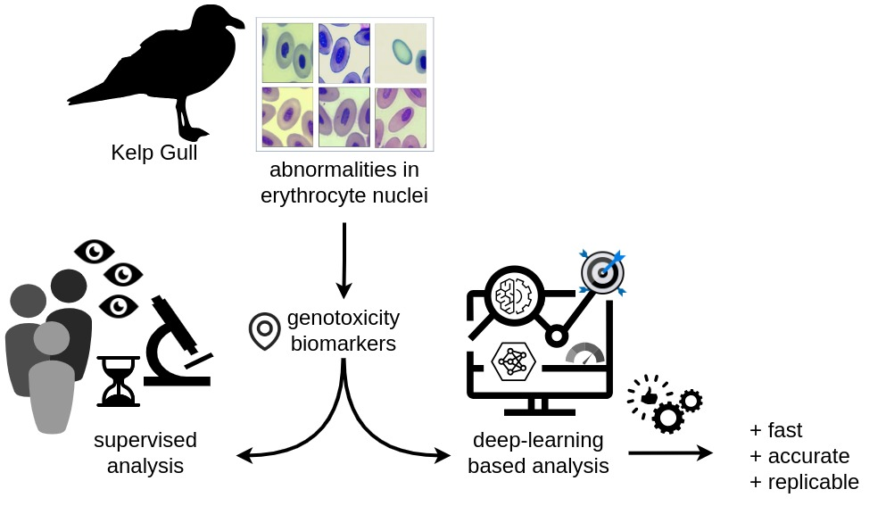

Applied Research in Academic, Industrial, and Governmental Contexts
Imaging Sciences Laboratory - Universidad Nacional del Sur and CONICET - San Andrés 800 - (8000) Bahía Blanca - ARGENTINA
The Imaging Sciences Laboratory pioneers research, teaching and I+D+i activities in Argentina and Latin America in Image Processing, Computer Graphics, and Visualization. The current staff includes six full-time fellows of the National Research and Technology Council of Argentina (CONICET), four postdoctoral fellows, 12 Ph.D. candidates, and several national and international interns. The main activities are related to pure and applied research in image and video analysis, multifractality, complexity theory, and deep learning, with more than 120 SCI indexed papers, 20 doctoral dissertations, and breakthrough interaction with other research groups worldwide in medical imaging, biometrics, shape analysis, biomedical signal analysis, remote sensing, environmental monitoring, digital ergonomy, and many other topics. The group also actively participates in the development and deployment of innovative products for more than 20 companies and institutions, including governmental and third sector organizations, and has been awarded several national innovation prizes. Here we present some ongoing projects, with application in different contexts that illustrate the breadth of the Lab's activities1.
-
New intelligent methods presumptive diagnosis in pantomographies. The dental panoramic X-ray (panoramic or orthopantomography) is the most accurate and valuable source of information to support dental clinical diagnosis. However, assisted diagnoses are costly, time consuming, and require a wide expertise not always available. This project proposes a comprehensive application that emulates the ability of a human specialist to interpret, quantify and describe different dental and oral conditions and characteristics. The underlying model was trained with several thousands of actual pantomographies and their respective expert diagnoses in natural language, embedding the image analysis and the linguistic latent spaces.

The presumptive diagnoses to be generated encompass a wide range of conditions, such as missing or misaligned dental pieces, infections, irregularities in teeth and gums, impacted dental pieces with periodontal disease, cysts or tumors in the maxillofacial region, among others. The foundation of the functioning of this project consists of intelligent image analysis models trained from several thousands of panoramics diagnosed by specialists. The images were then labeled to train deep networks that would allow detecting and identifying the conditions indicated in their respective diagnoses.
As mentioned, to provide proper support for image-based diagnostic decision-making, this project not only considers the training of image analysis models through deep learning but also supervised diagnoses in natural language. One of the innovative aspects of our model, then, is to correspond the linguistic model of the diagnoses with the parameters of image analysis. This is achieved through embedding techniques of the latent spaces of both models: the semantic space of diagnoses is corresponded with the latent space of the image analysis model.
On the other hand, the work conducted with several thousands of panoramics enables the extraction of demographic parameters, which can be used to determine statistical models of different prevalences of individual and combined dental conditions. This, on one hand, grants greater precision and accuracy in the development of presumptive diagnosis, and on the other hand, enables the accumulation of valuable information for health policies.
Currently, more than 5000 images with their respective diagnostic texts have been labeled and analyzed. This allowed for the creation of an initial effective model for automatic detection and segmentation of dental pieces by type and location, a model for numbering dental pieces according to the International Code (FDI), an automatic landmarking model for anatomical points and centroids of dental pieces, presence/absence of caries, and other conditions. The results are presented in an innovative digital negatoscope model, which facilitates professionals in identifying marked dental pieces on an approximate 3D model of the craniofacial structure (Demo: https://imaglabs.org/panto/, Explanatory video: https://www.youtube.com/watch?v=4Kwjbcvd8Fc).
Within a two-year timeframe, the expectation focuses on two groups of objectives: the consolidation of the model, and the initiation of productization through the development of a functional prototype to initiate its dissemination and commercialization.
1 See https://github.com/ImageLabUNS for an expanded description of these projects.
-
Advanced nuclear anomaly detection in microscopy images. Nuclear abnormalities in avian erythrocytes have been used as biomarkers of genotoxicity in several species. Anomalous shapes are usually detected in the nuclei by means of microscopy inspection. However, due to inter- and intra-observer variability, classification of these blood cell abnormalities could be problematic for replicating research. A deep learning model was developed to improve standardization in identifying the biological configurations of biological importance. This method has proven to be a fast and efficient approach that reduces the dependence on human supervision in the classification of nuclear abnormalities in avian erythrocytes, and can be adapted to be used in similar contexts with little effort.
Recently, nuclear abnormalities in avian erythrocytes have been used as biomarkers of genotoxicity in several species. Anomalous shapes are usually detected in the nuclei by means of microscopy inspection. However, due to inter- and intra-observer variability, the classification of these blood cell abnormalities could be problematic for replicating research. Deep learning, as a powerful image analysis technique, can be used in this context to improve standardization in identifying the biological configurations of medical importance. In this study, we present a standardized deep learning model for identifying and classifying abnormal shapes in erythrocyte nuclei in blood smears of the hemispheric and synanthropic Kelp Gull (Larus dominicanus). We trained two convolutional backbones (ResNet101 and ResNet50 architectures) to obtain models capable of detecting and classifying these abnormalities in blood cells. The analysis was performed at three discrimination levels of classification, with broad categories subdivided into increasingly specific subcategories (level 1: “normal”, “abnormal”, “other” / level 2: “normal”, “ENAs”, “micronucleus”, “other” / level 3: “normal”, “irregular”, “displaced”, “enucleated”, “micronucleus”, “other”). Performance was more than adequate and very similar in levels 1 and 2 (F1-score 84.6\% and 83.6\%, and accuracy 83.9\% and 82.6 \%). In level 3, performance was lower (F1-score 65.9\% and accuracy 80.8\%). It can be concluded that level 2 of analysis should be considered the most appropriate as it is more specific than level 1, with similar quality of performance. This method has proven to be a fast, efficient and standardized approach that reduces the dependence on human supervision in the classification of nuclear abnormalities in avian erythrocytes, and can be adapted to be used in similar contexts with little effort. Currently, we are working on expanding the analysis categories, improving the model's performance, and extending the analysis to other bird species.
-
Remote detection, surveying, and population assessment of sea and land fauna, in Protected Natural Areas of the Chubut province (Argentina). This project is funded by the Science, Technology, and Innovation Ministry of Argentina, and is fully aligned with the Sustainable Development Goals (SDGs) promoted by UNESCO. The aim is to streamline the processes of establishing sound indicators to evaluate the demographic dynamics of terrestrial and marine wildlife for various purposes (scientific, environmental, touristic, etc.), reduce costs, and reuse data (images/videos) for multiple purposes. It also seeks to facilitate systematic monitoring of different species, identify critical habitats, and detect and assess both natural and anthropogenic impacts. This information is required in formulating management and impact mitigation plans, and making decisions in biodiversity conservation policies, sustainable use of natural resources, and sustainable development. This project represents a technological advancement to improve the efficiency, speed, and accuracy of the data obtained and has the potential to be scalable and adaptable to different geographical regions and objects of study.

The management and conservation of resources for scientific, tourism, production, and conservation purposes require accurate indicators to evaluate biological, environmental, and anthropogenic dynamics, among others. Population dynamics and biodiversity of endemic or threatened species (both terrestrial and marine), for instance, are currently understood through censuses that tend to be logistically complex and costly for large geographic scales. Various stakeholders regularly conduct data acquisition campaigns (e.g., flights or photographic campaigns) and process the information in the office. This information, apart from being expensive, requires extensive specialist supervision and is not interoperable. Alternatively, Artificial Intelligence (AI), image processing, and data science offer advanced research methods and innovative technologies that allow for the extraction and availability of this information while keeping it up-to-date and accessible. This approach has the potential to be useful for managing indicators related to fauna, flora, anthropogenic factors, etc., positively impacting biological, ecological, environmental studies, and the productive sector.
These intelligent image processing techniques allow for the inference and automatic generation of semantic content from images, which has a wide range of applications in tasks like description, content extraction, classification, counting, among others. These techniques have experienced significant advancements due to considerable improvements in hardware, with more powerful processors and higher-capacity, lower-cost storage media. In turn, libraries of open-source repositories, high-level machine learning libraries, source code hosting and collaboration platforms, developer query forums, AI-based assistants, public datasets for data-driven trainings, have greatly enabled and expanded the application of these advancements with significant success in a wide variety of contexts and intervention areas. Digital photography has benefited characterization, recognition, surveying, and monitoring work, thanks to its low cost and the ability to obtain instant images from multiple sources.
This project aims to streamline the processes of establishing indicators to assess the demographic dynamics of terrestrial and marine wildlife for various purposes (scientific, environmental, tourism, etc.), reduce their costs, reuse data (images/videos) for multiple purposes, facilitate systematic monitoring of different species, identify critical habitats, and detect and evaluate impacts, both natural and anthropogenic. To this end, algorithms are being researched to automate data management (images and videos) in the unsupervised detection of various study objects. The systematically obtained information will subsequently be used to generate infographics, dashboards, and reports of scientific, ecological, and governmental interest. This will be useful for monitoring, formulating management and impact mitigation plans, and making decisions in biodiversity conservation policies, sustainable use of natural resources, and sustainable development. It will also lay the groundwork for future ecological and environmental studies, in conjunction with other strategic scientific research, including exploration and conservation activities. This development represents a technological advancement to enhance the efficiency, speed, and accuracy of the obtained data and has the potential to be scalable and adaptable to different geographic regions and study objects.
The current proposal involves the development of software using intelligent image processing techniques. This software will be trained to detect, identify, and survey multiple targets of interest for various stakeholders in the Chubut province (scientific community, regulatory authorities, NGOs, etc.). These outcomes will not only streamline data collection and analysis tasks but also enable the reuse of existing resources, proper planning of new collections, and obtaining precise and reliable indicators over time, enhancing the quality of indicators used in various activities.
The main objective of the project is to systematize and unify the extensive data collection from diverse sources to create a comprehensive technological platform of indicators that facilitate resource monitoring over time. This platform should serve as input for management and contingency decisions, spatial planning, and conservation. The specific objectives are as follows:
- Initial acquisition and compilation of images and videos from various sources: satellite images, aerial images (e.g., manned and unmanned aircraft), videos, and images from scientific and citizen sources.
- Generation of datasets for training, validation, and testing models based on the above.
- Development of image and video analysis models to automate the survey of multiple targets (e.g., wildlife, human activities, anthropogenic interventions) using contemporary machine learning and deep learning technologies.
- Training these models for possible required indicator types.
- Generation of visualization products, dashboards, and standard reports for integration with other computer systems.
Methodology:
The initial collection of images and videos will be obtained from aerial surveys of various indicators of interest in suitable sectors and moments, covering transects over protected natural areas in the Province (Wildlife Reserves in Península Valdés, Punta Loma, Punta León, and Punta Tombo). For example, when detecting and surveying wildlife, information about sectors with higher animal densities during key stages of the life cycle of various species will be considered. For other productive indicators of tourism interest, such as visitor flow and recreational or sports activities, key dates like holidays, tournaments, competitions, etc., will be considered at popular sites. The aerial surveys will be conducted through private flights from a four-seat LV-JDZ Cessna C-182 aircraft and some of these sectors will also be surveyed using unmanned aerial vehicles.
These surveys will be used for training and validating models. The survey routes (distance/duration) will be subject to the autonomy of the equipment, which could be affected by changes in weather conditions. Operational conditions (flight altitude, approach to targets) will comply with current regulations. Some satellite images of the areas and dates of interest will be provided by the National Commission for Space Activities (CONAE) through a specific agreement. Video materials and images from scientific studies and/or the public domain (citizen science) will also be integrated into this resource.
For managing and supporting analysis material, a storage technology infrastructure (hardware/software) will be configured, allowing for the extraction of associated information (spatial and temporal metadata, technical capture data, etc.). This material will undergo exploration, sorting, and data cleaning to form datasets, which will be used for manual annotations and marking tasks of objects of interest using computer tools designed for this purpose. Once these datasets with corresponding annotations are formed, open-source components will be used to design, develop, and train detection and information extraction models (e.g., automated detection, determination, and counting of species, sex, age categories, photo identification, detection and counting of people in recreational sites and moments, identification of pollution factors or risks, among others).
Metrics will be established to measure and compare the results of the developed models, validating and testing them and making necessary adjustments. The obtained models will be used to process the datasets and store information in an accessible online platform. For generating products and displaying results, open-source components for visualization, exploration, and data analysis (georeferential, statistical, etc.) will be used. A geotemporal database will be designed and implemented, and software will be developed for the automatic generation of dashboards and standard reports for integration with other computer systems (e.g., heatmaps, integrable data layers), accessible through web services, browsers, or mobile applications.
-
Automated personnel digital twinning in industrial workplaces. Virtualized work environments facilitate testing and simulating actual and hypothetical scenarios, feeding relevant information back into the actual environment. This is valuable in the context of data-driven Industry 4.0, where generalized requirements concerning a more thorough analysis of workers’ activities in several settings are required. This project aims to extract video-based information about personnel activities in their workplaces, aiming at ergonomic risk assessment and prevention, safety conditions, and overall monitoring. The extracted parameters inform ergonomists or managers regarding situations or contexts that require intervention. (DOI: 10.1109/ICECET55527.2022.9872882).
Digital twin technology is designed to use real world data together with simulation programs to understand or predict how a process or activity is being performed. This technology arose in the last decade in several industrial contexts, mostly focused on devices, facilities and manufacturing, and only very recently to twinning human behavior. This paper describes an applied study on digital twinning of workers within complex and varying industrial settings, using the recently introduced VIBE neural network. VIBE comprises a two-stage pipeline of neural network blocks (NNB), where the first stage determines detection and tracking, while the second stage performs 2D-to-3D human model mapping. The first stage allows using three different NNB combinations, namely Mask R-CNN \& SORT, YOLO \& {SORT}, and STAF. In this work, we focus on the influence of each NNB on the second stage and the final output using state-of-the-art performance metrics. Mask R-CNN \& SORT provided a multi-object tracking accuracy (MOTA) of 87,2\%, while STAF obtained a MOTA of 88,5\% and the best performance with occlusions in the final 2D-to-3D human rendering. These results pave the road for new developments in real-time complex digital twinning and workplace virtualization, in which human activities are an essential part.
-
Cloud-based platform for crop produce management. As a third sector organization, the Chamber of Crop Producers of Bahía Blanca assists their affiliates in the provision of the most complete and comprehensive information service for the entire agricultural production chain in the five more economically significant types of crops in the region (wheat, barley, soybeans, sunflower, and corn). For this, the Agroinfinity platform ( http://agroinfinito.com.ar/) automates the most relevant processes (loading satellite images, meteorology, information processing, analysis of series of time, etc.) together with outstanding information collected right by the producers, users and other actors. The fusion of the different sources of information together with its interpretation by expert agronomists and producers makes it possible to design an integrated information management and analysis system in extensive areas. AgroInfinito represents a strategic development that goes beyond the purely technological aspects. It is an open innovation tool, promoting the creation of value aiming at the digital transformation of the agricultural production system (https://agroinfinito.com.ar/).
Argentina has had a worldwide privileged position as one of the biggest grain and oil seed producers. The agricultural sector plays a key role in the country's economy and requires the generation of more strategic agro-productive information. The Ministry of Agriculture, Livestock, and Fisheries is the main entity collecting and reporting productive data in Argentina. However, these reports are not equally carried out in peripheral areas. Our country has the potential to have large-scale agricultural production and develop a powerful agro-business in order to create a new economic growth engine. The constant sector growth thanks to agrotechnology (Agtech) is changing the traditional methodology of generating agricultural information. For this reason, in the southwest of Buenos Aires (SOB) and the Port of Bahia Blanca's area, the development of a computerized geotechnological platform is introduced. AgroInfinito integrates and analyzes data from different sources, and provides a comprehensive information service for the entire agricultural production chain in the five more economically significant types of crops in the region (wheat, barley, soybeans, sunflower, and corn). The platform automates the most relevant processes (loading satellite images of the constellations involved, meteorology, information processing, analysis of series of time, etc.) together with outstanding information collected right by the producers, users and other actors through a specifically developed app. It also incorporates field information periodically obtained by expert agronomists who are part of the work team. The fusion of the different sources of information together with its interpretation by expert agronomists and producers makes it possible to design an integrated information management and analysis system in extensive areas. AgroInfinito represents a strategic development that goes beyond the purely technological aspects. It is an open innovation tool, promoting the creation of value aiming at the digital transformation of the agricultural production system.